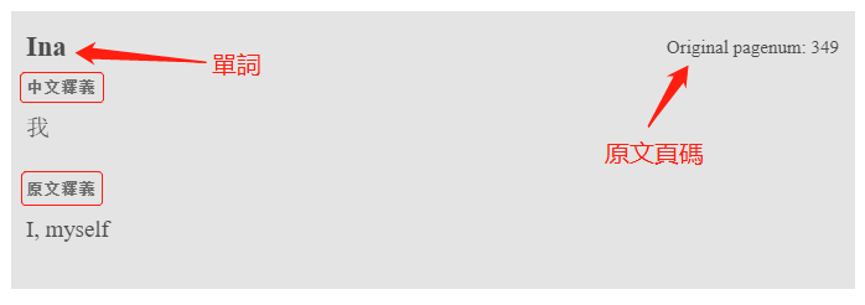
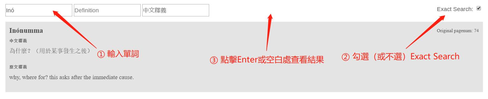
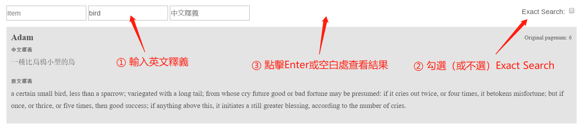
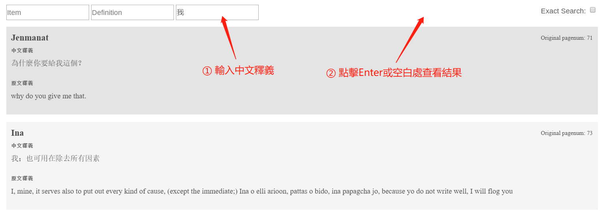

虎尾壠簡介
虎尾壠社是 17 世紀荷治時期重要的原住民聚落之一，其分佈位置約在今日彰化、雲林一帶，介於新舊虎尾溪之間。許多學者，包含小川尚義、李壬癸、土田滋、楊森富等人，認為虎尾壠社的族屬應為臺灣中部的「巴布薩族」（Babuza 或 Babosa），或洪安雅族的分支（Hoanya）；而其於荷蘭文獻中之名：Favorlang、Favorlangh、Vavoylangh、Vavorolangh、Vavorlla等，經考究發現可能為當時與其敵對的西拉雅族所稱，並非本族人自我認同的稱呼。荷蘭文獻記載形容虎尾壠族人是個「粗野兇悍傲慢的」族群，多次與生活於魍港的漢人發生衝突，是荷蘭人眼中的麻煩製造者。於是荷蘭人統治期間曾對虎尾壠人發動數次征伐，不但殺害了多數人口，更燒毀了族人賴以為生的穀倉與房屋。虎尾壠人在生存環境日漸窘迫之下，只能不斷搬遷或與漢人同化，於是整體文化便漸漸走向了消亡之路。
虎尾壠亦可指涉該族群使用的語言。虎尾壠語區所涵蓋的範圍大約為北港溪上流、濁水溪至大肚溪一帶，是荷治時期使用最廣泛的臺灣原住民語之一，它與新港語是目前僅存的 17 世紀原住民語料，主要保存於荷蘭東印度公司牧師記錄下來的辭典、主禱文、聖經片段、教義問答、以及講道詞裡。根據吳國聖（2011），荷蘭人研究虎尾壠語的過程大致如下：1650 年，Jacob Vertrecht 牧師著 Leerstukken Ten Gebruikke der schoolen van t Favorlang district，包含主禱文、信仰要項、十誡和祈禱文，也含有部分一般會話、基督教教理問答等。之後到來的Gilbertus Happart牧師，完成了《虎尾壠語字典》，但並未出版。直到 1840 年由麥都思牧師譯成英文，以 Dictionary of Favorlang Dialect of the Formosa Language 為名出版。1896 年，甘為霖牧師又再編輯出版，成為今日教通行的荷蘭語字典版本。這些資料現今皆為研究虎尾壠人文化現象與生活狀態的重要依據。
線上字典使用説明
你可以在網頁的導覽列 (navbar) 點擊字典檢視完整的虎尾壠語字典，或是進入電子檢索搜索字典的內容 (詞條、釋義、中文翻譯等)。下方為線上字典的使用介紹。
字典詞條 🔗
線上虎尾壠語字典的順序依照原本英譯本字典的順序排列。每個詞條的內容包括「單詞」、「中文釋義」、「原文釋義」、「原文頁碼*」四個部分。
下方範例為 Ina 這個詞條：

* 原文頁碼是指虎尾壠語字典英譯本 的 PDF 頁數 (非印刷於書上之頁碼)
電子檢索 🔗
進入電子檢索後，共有 3 種檢索方式 (依搜尋優先順序排列)：單詞檢索、英文釋義檢索、中文釋義檢索。這三種檢索方式有優先順序，亦即，系統每次僅會依照其中一種方式進行搜尋：
- 若單詞檢索已輸入文字，則會忽略英文釋義檢索、中文釋義檢索
- 若英文釋義檢索已輸入文字，則會忽略中文釋義檢索
- 若想使用中文釋義檢索，則單詞檢索與英文釋義檢索皆不可輸入文字
下方詳述此三種檢索功能
單詞檢索
該功能為對字典中單詞的檢索。使用步驟如下：
① 在 item 框内輸入所需檢索的單詞
② 勾選 Exact Search 以開啓精確檢索功能（區分大小寫與單詞上標），如不勾選則為模糊匹配
③ 點擊鍵盤 Enter 鍵，或單擊頁面任意空白位置即可查看檢索結果

英文釋義檢索
該功能為對字典中單詞的英文釋義的檢索。使用步驟如下：
該功能為對字典中單詞的英文釋義的檢索。使用步驟如下：
① 在 Definition 框内輸入所需檢索的單詞
② 勾選 Exact Search 以開啓精確檢索功能（區分大小寫與單詞上標），，如不勾選則為模糊匹配
③ 點擊鍵盤 Enter 鍵，或單擊頁面任意空白位置即可查看檢索結果

中文釋義檢索
該功能為對字典中單詞的中文釋義的檢索。使用步驟如下：
① 在 中文釋義 框内輸入所需檢索的單詞的中文釋義
② 點擊鍵盤 Enter 鍵，或單擊頁面任意空白位置即可查看檢索結果

參與人員
此計畫由許多人共同完成，下方為參與人員名單 (皆按筆劃排序)。
主持人
江文瑜
字典轉寫
王凱弘、石晴方、吳妤蓁、呂曉鈞、沈瑞恩、施俊宏、徐樂德、康容榕、張飛揚、張庭瑋、莊勻、許峻維、廖永賦、Mateja Lasnik、Thomas Schlatter
字典校對
王凱弘、石晴方、呂曉鈞、沈瑞恩、施俊宏、莊勻、許峻維、Mateja
網站內容
吳妤蓁、康容榕、張飛揚、張庭瑋、廖永賦